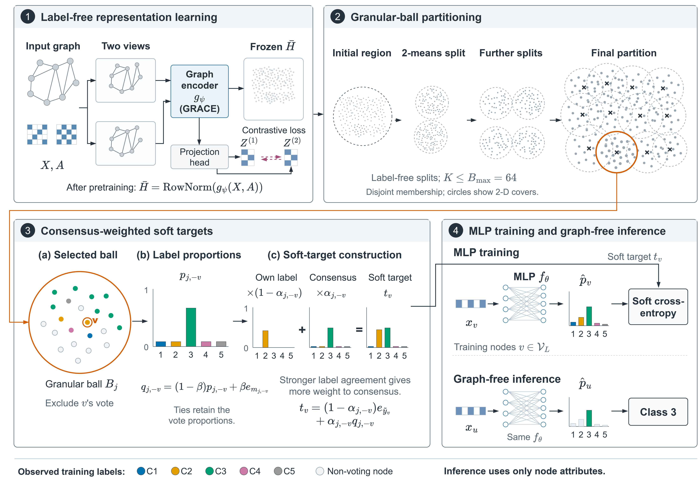
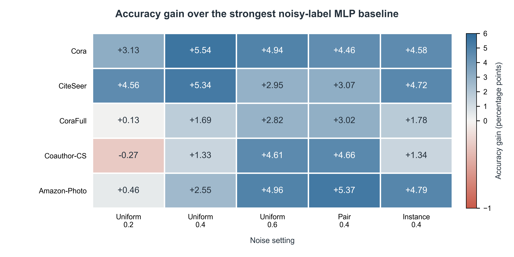
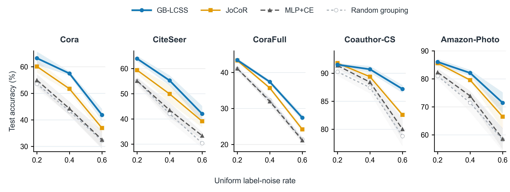
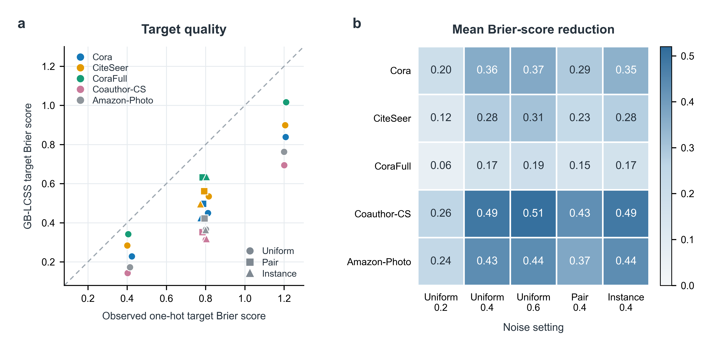
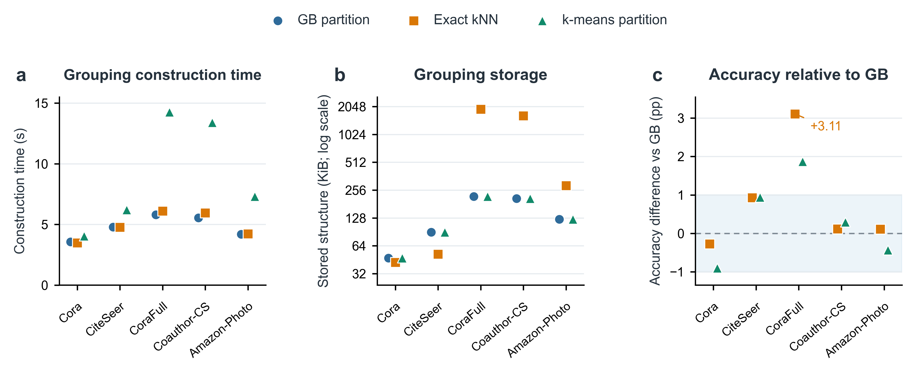

Fig. 1. Method overview
PNGPDFEditable draw.io
Fig. 2. Accuracy gains
PNGPDFEditable SVG
Fig. 3. Uniform-noise curves
PNGPDFEditable SVG
Fig. 4. Target quality
PNGPDFEditable SVG
Fig. 5. Grouping comparison
PNGPDFEditable SVG